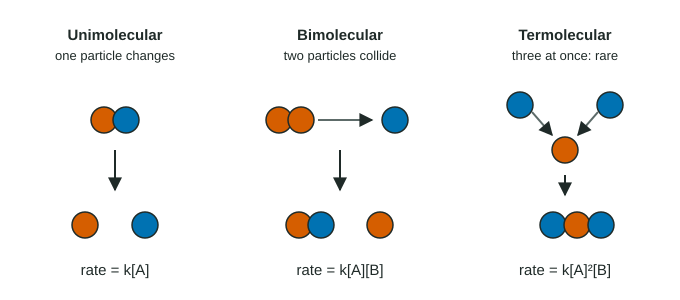

Many reactions look simple on paper but happen in several small events. Each single event is an elementary reaction (or elementary step): one collision between particles, or one particle falling apart, that happens all at once. This topic is about those single events, because they are the one place where you can write a rate law just by looking at the equation.
One event, one rate law
For an elementary step, the rate is proportional to how often the reacting particles meet. Doubling the number of A molecules in a box doubles the number of A–B collisions each second. So the rate law of an elementary step uses its coefficients as the orders:
| Elementary step | Molecularity | Rate law |
|---|---|---|
| A → products | Unimolecular (1 particle) | rate = k[A] |
| A + B → products | Bimolecular (2 particles) | rate = k[A][B] |
| 2 A → products | Bimolecular (2 particles) | rate = k[A]² |
| 2 A + B → products | Termolecular (3 particles) | rate = k[A]²[B] |

Molecularity
Molecularity is the number of reactant particles in an elementary step. Unimolecular steps are one particle breaking apart or rearranging. Bimolecular steps are two particles colliding; they are the most common. Termolecular steps need three particles to meet at the same instant, which is rare. Steps with four or more particles do not happen in practice.
Worked example: counting collisions in a box
For the elementary step A + B → AB, a box holds 3 A and 2 B molecules. A second box holds 6 A and 2 B. How do the rates compare?
Step 1. Every A can hit every B, so the number of possible A–B pairs is 3 × 2 = 6 in the first box and 6 × 2 = 12 in the second.
Step 2. Twice as many pairs means twice as many collisions per second, so the second box reacts twice as fast. The rate law rate = k[A][B] says the same: [A] doubles, [B] is unchanged, rate × 2.
Elementary step or overall reaction?
The rule "orders = coefficients" works only for elementary steps. For an overall balanced equation you cannot tell the orders without data, because most overall reactions happen in several steps. A useful test: if the measured rate law does not match the coefficients of the overall equation, the reaction cannot be a single elementary step. An overall equation with many particles on the left, such as 2 H₂ + 2 NO → N₂ + 2 H₂O, cannot be one step either: four particles never meet at once.
Topic 5.7 shows how several elementary steps add up to an overall reaction.
Worked example: rate from an elementary rate law
The elementary step 2 NO₂ → NO₃ + NO has k = 0.75 M⁻¹ s⁻¹. Find the rate when [NO₂] = 0.020 M.
rate = k[NO₂]² = (0.75 M⁻¹ s⁻¹)(0.020 M)² = (0.75)(4.0 × 10⁻⁴) M/s = 3.0 × 10⁻⁴ M/s.